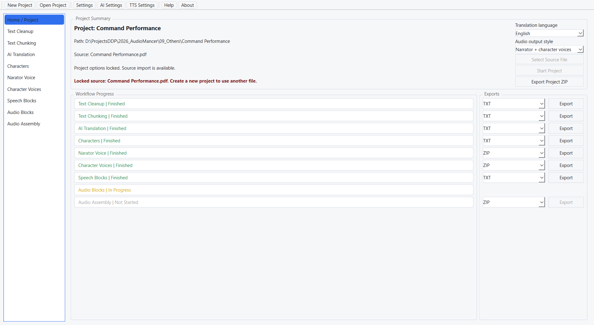
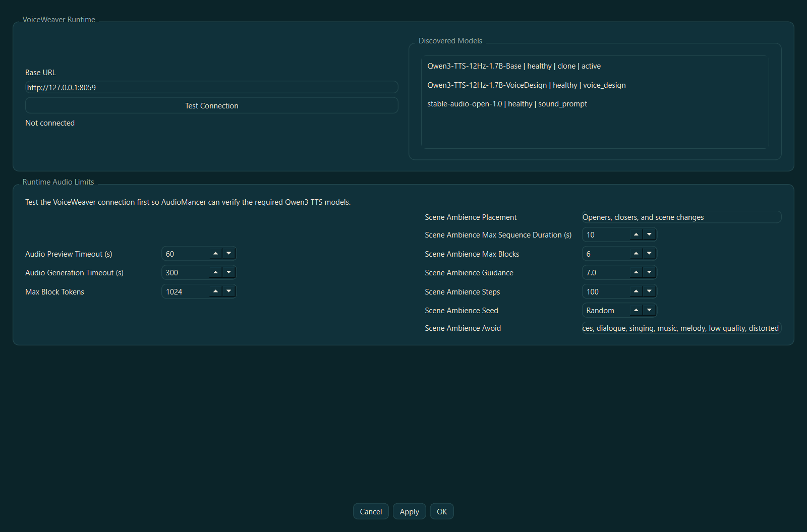
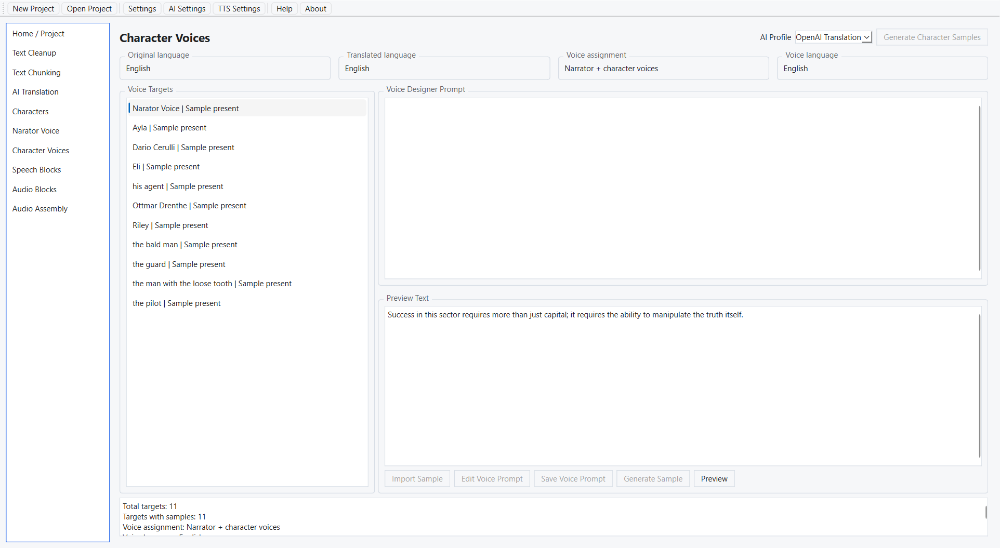
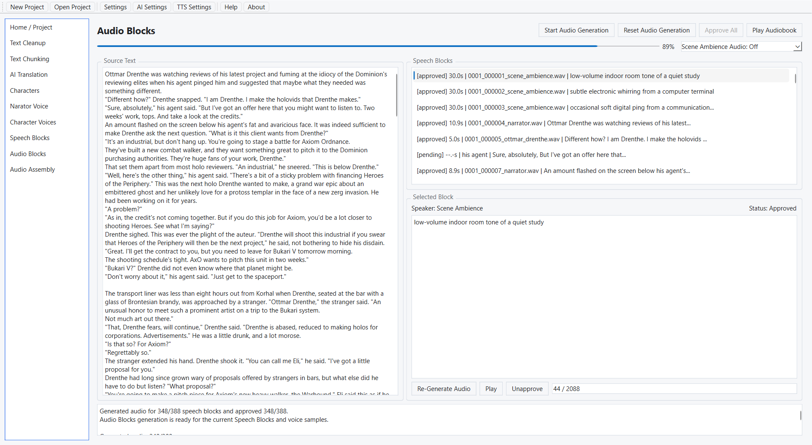
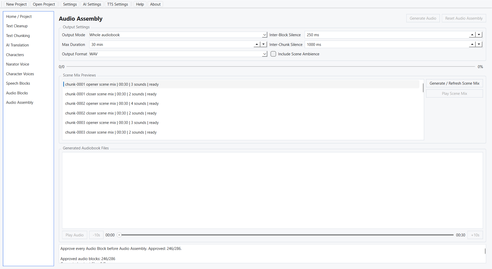

Welcome
Help version: 2.2.1
Application version: 2.2.1
Creator: Eng. Dipl. Dan Dumitru Pasare
Contact: pasaredan1979@gmail.com
AudioMancer turns a written book or story into audiobook WAV files. It guides you through the work one page at a time: import the source, clean the text, split it into chunks, optionally translate it, prepare narrator and character voices, split the text into speech instructions, generate the audio, and assemble the final audiobook.
The Window
The toolbar across the top holds New Project, Open Project, Settings, AI Settings, TTS Settings, Help and About. These stay available at all times. Help opens this offline guide in your browser, and About shows the version and the licence text.
The sidebar on the left lists the ten pages in working order: Home / Project, Text Cleanup, Text Chunking, AI Translation, Characters, Narrator Voice, Character Voices, Speech Blocks, Audio Blocks, and Audio Assembly. Until a project is open only Home / Project can be selected; the other rows are greyed out. Work down the list from top to bottom.
Directly under the sidebar sits the Op Status button. It opens the status of the operation belonging to the page you are viewing: counts, warnings, and how the last run ended. It stays greyed out until that operation has run at least once, and it is never available on Home, which has no operation of its own. The window it opens is resizable, does not block the application, and follows you as you move between pages. Close it with its Close button.
How Work Is Protected
AudioMancer keeps completed work where it can. A local edit — one chunk, one translation, one character, one voice, one Speech Block — resets only the records that depend on it. Rerunning a whole operation is different: it clears that operation's result and everything downstream of it, and every action that does so asks you first. Confirmation questions default to No, so pressing Enter by accident never destroys work.

Text Menus And Search
Right-click a text field or preview on any page or in a dialog, including Cleanup and Op Status. Read-only text offers Copy, Select All, Find, Find Next and Find Previous. Editable fields also offer Cut, Paste, Delete, Undo and Redo. Commands become available according to the selection, clipboard and edit history.
Use Ctrl+F to search the active field, F3 for the next match and Shift+F3 for the previous one. Find starts with your selected text, or that field's previous query. Search is literal and case-insensitive, and wraps at either end. Cancelling Find or finding no match keeps your selection and text unchanged.
Ctrl+C/X/V, Ctrl+A and the usual Undo/Redo shortcuts remain available when appropriate. Paste inserts plain text. Editing commands follow the field's current Edit/Save/Cancel mode; read-only previews stay protected. Password and masked-key fields retain their native protected interaction.
Search changes only the selection. Editing follows the page's existing save workflow; menu actions do not save or reset a project automatically.
What You Need
- AudioMancer: the desktop application and this offline help bundle.
- VoiceWeaver: required for all audio generation. Install it on the same computer or on another computer reachable on your local network.
- An AI text model: required for AI-assisted cleanup, AI-assisted chunking, translation, character discovery, narrator profile generation, and Speech Blocks. Deterministic cleanup and deterministic chunking work without one.
- Disk space: for the source file, intermediate WAV files, and the final audiobook.
VoiceWeaver must be running before any sample or audio block can be generated. If it runs on
another computer, enter that computer's address in TTS Settings — for example
http://192.168.1.25:8059.
Translation targets are English, Romanian, German, French, Russian, Portuguese, Spanish, and Italian. The spoken language follows the translation language you lock on the Home page, so VoiceWeaver needs voices that support it.
Install And Start
Windows
- Download the AudioMancer Windows zip file.
- Right-click the zip file and choose Extract All.
- Open the extracted folder.
- Double-click
AudioMancer.exeorStart-AudioMancer.cmd.
Ubuntu
- Download the AudioMancer Ubuntu zip file.
- Extract the full zip folder.
- Open a terminal in the extracted folder.
- Run
./AudioManceror./start-audiomancer.sh.
The folder can sit directly below a drive or filesystem root, for example D:\AudioMancer
or /audiomancer. AudioMancer starts normally there and the toolbar
Help action opens the packaged English or Romanian guide kept beside the
executable. If that file is missing, AudioMancer says so instead of opening a browser.
Settings
Open Settings from the toolbar. The dialog holds four controls on one row, a theme and font group, and a live preview.
- Language — English or Romanian. It changes the interface and the guide the Help action opens.
- Play completion beep — off by default. When it is on, AudioMancer beeps once as soon as a long operation ends on its own, so you can start a run and step away. An operation you cancel yourself stays silent.
- Scroll steps — from 1 to 5, default 1. It sets how many lines the text and list panes move per mouse-wheel notch.
- Theme — eleven built-in themes: Classic Light, Warm Reading, High Contrast, Default Dark, Dark Contrast, AudioMancer Dark (the default), AudioMancer Parchment, Midnight Studio, Ember Night, Nordic Slate, and Ink and Paper.
- UI font size and Text font size — two independent combos, each offering Extra small, Small, Medium, Normal, Large, Very large and Huge, both starting at Normal. The first scales buttons, labels and lists; the second scales the long text windows and the Op Status window, so you can enlarge reading text without enlarging every control.
The Preview group under the combos shows a sample label, a sample button and a sample text window in the selected theme and both font sizes, so you can judge a choice before applying it.
Cancel closes without saving. Apply saves and refreshes the running interface with the dialog still open. OK saves, refreshes and closes.
Persisted Custom Themes
If settings.json already contains valid custom themes, they appear in the combo after
the built-in ones, under the names their author gave them, and those names are not re-translated
when you change the interface language. Selecting one updates the preview, and Apply or OK keeps
both the selection and the theme's stored colours.
settings.json loads normally, with or without a byte-order mark. If the
file is malformed, AudioMancer preserves its exact bytes beside it as
settings.corrupt.json — or a numbered backup when that name is taken — and continues
with built-in defaults. Keep those backups private: they contain the same API keys as the
original.

AI Settings
AI Settings stores the chat-model profiles used for AI-assisted cleanup, chunking, translation, Book Analysis, character discovery, narrator profile generation, and Speech Blocks. These profiles never generate audio — that is VoiceWeaver's job, configured in TTS Settings.
Use A ChatGPT Subscription
AI Settings opens at 800 × 600 logical pixels, bounded by the screen. Compact equal-width default selectors sit below the profile list, with single-line labels. The editor sits alongside them when space allows; narrow windows stack the sections. The profile list preserves its scroll position and keeps the selected profile visible. Cancel, Apply and OK stay visible while content scrolls. Idle subscription status is available in tooltips; progress and errors appear when needed.
- Add a profile and select
chatgpt_subscription. The service URL is fixed and no API key is needed. - Press Sign in with ChatGPT and complete the OpenAI browser page. If the callback port is busy, choose Use device code, open the displayed OpenAI page, and enter the temporary code.
- Choose a candidate model or type its identifier, then press Test model. The test sends tiny synthetic prompts and separately checks text access and the exact strict schema needed by Cleanup. Candidate names are suggestions, not a list of your account entitlements.
- The primary model list refreshes after sign-in and when AI Settings opens with a cache older than one hour. Refresh models updates it immediately without sending a prompt. The Refresh models tooltip identifies live, cached, stale or built-in model data. Refreshing preserves your model and unsaved edits.
- Choose Reasoning effort per profile: Provider default lets the server decide; explicit levels are the selected model's supported options. Higher effort can affect response time and subscription consumption. A saved unavailable level remains visible and must be changed before running; AudioMancer never silently substitutes another effort. Older Thinking enabled settings become Medium; Thinking disabled becomes None, which may be unavailable.
- Selecting a subscription model fills Context Window from its reported default, not its maximum capacity. You can edit it afterwards; refresh and reopening settings preserve that edit until another model is selected. Unknown defaults leave the current value unchanged. Local/custom model selection keeps context manual. Choose workflow defaults, then Apply or OK. Temperature is provider-controlled; catalog metadata does not replace model/schema testing. Changing reasoning effort starts a new Book Analysis candidate rather than resuming checkpoints made with another effort.
This experimental connection uses your ChatGPT subscription allowance, separately from API billing. Access and limits can change. No audio or TTS service is included. A text-only verified model can run the other JSON text workflows; Cleanup AI remains unavailable until strict schema verification succeeds.
Credentials are protected per OS user, outside portable settings: Windows uses DPAPI; Linux requires an available native Secret Service or KWallet keyring. Select Session only before sign-in to keep new credentials in memory. If an unavailable store prevents removal of an older saved connection, the status says so; disconnect it once that store is available again. Copying a portable folder does not copy the sign-in.
Disconnect removes the active account and invalidates its verified models without deleting profiles. Sign-in and disconnect apply immediately; cancelling the settings dialog only discards profile edits. Cancel sign-in / test, switching profiles, or closing the dialog cancels pending account work. Expired or revoked authorization asks you to sign in again; quota errors ask you to retry after your subscription limit resets.
Recommended ChatGPT Models And Reasoning
These starting recommendations balance audiobook quality and subscription consumption. Compare results on a representative chapter before processing a whole book; they are not measured quality benchmarks. Availability and supported reasoning levels depend on the account and current model catalog.
| AudioMancer step | Recommended model | Reasoning effort | Guidance |
|---|---|---|---|
| Text Cleanup — optional AI assistance | GPT-5.6 Luna | Low | Bounded classification of ambiguous text boundaries. Try Terra if decisions are unreliable. Test model must verify strict schema support. |
| AI Text Chunking | GPT-5.6 Terra | Low | Identifies coherent scenes and boundaries. Use Medium for complicated scene transitions. |
| Book Analysis | GPT-5.6 Sol | Medium | Summarization and consolidation require understanding relationships across the book. |
| AI Translation | GPT-5.6 Sol | Medium | Prioritizes meaning, literary tone and dialogue consistency. Terra Medium is the economical alternative. |
| Characters — discovery and profiles | GPT-5.6 Terra | Medium | Balances extraction quality with consumption. Use Sol Medium for large casts, aliases or ambiguous identities. |
| Narrator Voice — written voice description | GPT-5.6 Terra | Low | A small creative task that usually needs little extended reasoning. |
| Character Voices — voice samples | No ChatGPT model | — | Audio generation uses the configured TTS provider. |
| Speech Blocks — narrator and characters | GPT-5.6 Terra | Medium | Speaker attribution and narration/dialogue separation need careful interpretation. Use Sol Medium for difficult dialogue. |
| Speech Blocks — same narrator | No ChatGPT model | — | Uses deterministic sentence packing. |
| Audio Blocks | No ChatGPT model | — | Uses the configured TTS provider. |
| Audio Assembly / export | No ChatGPT model | — | Audio processing and assembly do not require an LLM. |
Select explicit Low or Medium effort for consistent settings. Consider GPT-6 Astra Medium for especially difficult material. Higher reasoning uses more tokens and takes longer; reserve High for cases where a chapter comparison shows a meaningful improvement. XHigh, Max and Ultra are not recommended for routine audiobook processing. Exact subscription savings cannot be inferred from API prices.
Model positioning and reasoning guidance: OpenAI model documentation. These recommendations guide profile selection; AudioMancer does not apply them automatically.
Create A Profile
- Open AI Settings and press Add Profile. The new profile is added to the list on the left and selected.
- Give it a clear Profile Name, such as
Translation_gpt-5.5orSpeechBlocks_LMStudio_Qwen3. Leave Profile enabled ticked — only enabled profiles appear in the profile lists on the workflow pages. - Choose the Backend Kind:
lmstudio,ollama, oropenai_compatible. - Enter the Base URL. For OpenAI use
https://api.openai.com/v1; for LM Studio start its local server and usehttp://127.0.0.1:1234/v1, or the LAN address when it runs elsewhere. - Enter the API Key for online providers. The field is masked and may be left empty for a local provider.
- Press Connect. On success AudioMancer reports how many models it found and fills the Model Name list with them; on failure it shows the reason and keeps your last working values.
- Pick the model in Model Name. The field is editable, so you can also type a name the provider did not list.
- Set Context Window, Output Reserve (tokens), Timeout (s) and Temperature. The reserve keeps context capacity for a reply while AudioMancer plans source text; it is not sent as a provider output limit, so the provider chooses the response length. Reasoning Mode can keep the provider default, enable reasoning, or disable it; AudioMancer does not guess from the model name.
- Choose the default profile for each operation at the bottom of the dialog.
- Cancel discards the session. Apply saves without closing. OK saves and closes.
You can move between profiles while editing; each one keeps its unsaved values until you save or cancel. Remove Profile deletes the selected profile without asking, and refuses to delete the last remaining one; any operation default pointing at the removed profile falls back to (none).
A successful Connect can fill Context Window for you when the selected model reports one — LM Studio from the loaded instance, Ollama from the model details. Once you type in Model Name or Context Window yourself, later connections leave your value alone.
Numeric Fields
| Field | Range | Default |
|---|---|---|
| Context Window | 1 - 1000000 | 16384 |
| Output Reserve (tokens) | 1 - 1000000 | 8192 |
| Timeout (s) | 1 - 65535 | 300 |
| Temperature | 0.00 - 2.00, step 0.05 | 0.20 |
Operation Defaults
The lower part of the dialog sets which profile each operation starts with: Default Cleanup Profile, Default Chunking Profile, Default Book Analysis Profile, Default Translation Profile, Default Narrator Generation Profile, Default Character Extraction Profile and Default Speech Blocks Profile. Each lists (none) followed by every enabled profile.
Two further controls sit among them and are not profile choices. Default AI Chunking Strategy presets the strategy the Text Chunking page starts with — Paragraph, Meaning or Scene. Chunking Context Mode — Balanced, Wide scene context or Maximum context — decides how much text AI chunking reads at once; wider windows can produce more natural boundaries but cost more time per request.
Recommended LM Studio Local Profiles
Example local models: Qwen3.8-27B, google/gemma-4-12b, meta/muse-glimmer, openai/gpt-oss-20b. Use the exact identifier shown by your LM Studio server. These are models to evaluate, not a measured ranking. The values below are starting settings by operation, not model capacity claims or publisher sampling defaults; test a representative chapter and follow the model card if it requires a different sampling setup.
| Operation | Context (tokens) | Temperature | Reasoning in AudioMancer |
|---|---|---|---|
| AI Cleanup | 32768 | 0.1 | Provider default |
| AI Chunking | 32768 | 0.1 | Provider default |
| Book Analysis | 32768; try 65536 if needed | 0.2 | Thinking enabled, if supported |
| AI Translation | 32768 | 0.2 | Provider default |
| Character Discovery | 32768; try 65536 if needed | 0.1 | Thinking enabled, if supported |
| Narrator description | 16384 | 0.3 | Provider default |
| Speech Blocks — narrator and characters | 32768 | 0.1 | Thinking enabled, if supported |
Context: load the model in LM Studio with the intended context, then set AudioMancer's Context Window to no more than that loaded capacity and the model's supported limit. Start at 32768 for most tasks; try 65536 only when the model and available memory support it and wider source windows help. Increasing AudioMancer's value alone does not reload the server model. Larger context can require more memory and time.
Reasoning: Provider default leaves reasoning to LM Studio. Thinking enabled requests Medium when the endpoint supports the request. If the model or runtime does not accept this setting, use Provider default and configure its supported reasoning control in LM Studio. For simple cleanup, chunking and narrator descriptions, try Low in the LM Studio preset when available; for gpt-oss-20b, Low is a useful starting point and Medium is worth comparing for analysis and speaker attribution. Support for disabling thinking varies by model. Local profiles do not use the subscription's per-model effort selector.
AI Cleanup requires working strict structured output; confirm compatibility before assigning a model. Speech Blocks in same-narrator mode, audio synthesis and assembly do not use these LLM settings.
Configuration reference: LM Studio model configuration; reasoning reference: gpt-oss-20b model card.

TTS / VoiceWeaver Settings
TTS Settings configures the VoiceWeaver runtime used for narrator samples, character samples and Audio Blocks, and stores the Scene Ambience sound-generation defaults.
VoiceWeaver Runtime
- Install and start VoiceWeaver on this computer or on another computer in the same network.
- Enter the Base URL. The default is
http://127.0.0.1:8059. - Press Test Connection. AudioMancer reports success with the number of models found, or shows the failure reason. The status line beside the button reads Not connected, Connected or Connection failed, and starts at Not connected every time the dialog opens.
AudioMancer requires the simplified VoiceWeaver 1.0.0 REST API, provided as an unauthenticated local service. VoiceWeaver model files are managed outside AudioMancer; after changing them, test the connection again to refresh discovery.
Discovered Models lists what the runtime offers, one row per model as model | status | generation modes, with active appended to the one in use. Until a probe succeeds it shows a single line saying no models were discovered.
Runtime Audio Limits tells you whether the required Qwen3 clone and voice-design capabilities are available. Before a successful probe it asks you to test the connection first; afterwards it either confirms the capabilities or names the ones that are missing.
Timeouts And Block Length
| Setting | Range | Default |
|---|---|---|
| Audio Preview Timeout (s) | 10 - 3600 | 60 |
| Audio Generation Timeout (s) | 30 - 7200 | 300 |
| Max Block Tokens | 128 - 8192, step 128 | 1024 |
| Clone Temperature | 0.05 - 2.00 | 0.90 |
| Sub-talker Temperature | 0.05 - 2.00 | 0.90 |
| Sub-talker Top-K | 1 - 200 | 50 |
| Sub-talker Top-P | 0.05 - 1.00 | 1.00 |
Max Block Tokens is the largest generation budget one narration block is planned against. The TTS model reports its own recommended budget and that still applies, so this setting can only make blocks shorter, never longer. Lower it if you hear a cloned voice drift or wander toward the end of a long block — a model will attempt everything up to its recommended ceiling, but voice quality can fall off well before reaching it.
Clone Temperature and the three Sub-talker settings are sent with every Audio Blocks clone request. The defaults are the model's own. Lower the temperatures and Top-P when the cloned voice wanders away from the reference sample or changes character from one block to the next; the voice becomes steadier at the cost of a flatter delivery. Existing audio is kept when you change them, so regenerate a block to hear the effect.
Preview text length is not a setting. The Narrator Voice and Character Voices editors accept preview text within one fixed spoken-word range, which is the range that produces a usable voice-clone reference; both editors report the range if you leave it.
AudioMancer asks the discovered TTS model what it recommends, plans blocks against the smaller of that and Max Block Tokens, and keeps a safety margin below the result. Asking for more audio than a model can produce yields truncated or silent output, so the model always has the last word.
Scene Ambience
| Setting | Range | Default |
|---|---|---|
| Scene Ambience Placement | None · Openers and closers · Openers, closers and scene changes | None |
| Scene Ambience Max Sequence Duration (s) | 1 - 120 | 10 |
| Scene Ambience Max Blocks | 1 - 24 | 6 |
| Scene Ambience Guidance | 0.1 - 30.0, step 0.5 | 7.0 |
| Scene Ambience Steps | 1 - 300 | 100 |
| Scene Ambience Seed | -1 - 2147483647 | -1 (Random) |
| Scene Ambience Avoid | Free text, comma separated | speech, voices, dialogue, singing, music, melody, low quality, distorted |
Scene Ambience Placement is the switch that decides whether Speech Blocks generation creates ambience blocks at all. Leave it at None for a speech-only audiobook. Max Sequence Duration is the length of the whole ambience sequence, and it governs the sound AudioMancer generates for an ambience block; the per-block duration on the Speech Blocks page is only used when this setting does not apply. Max Blocks is a ceiling, not a quota — the model may use fewer when fewer distinct sound sources are useful. Set a fixed Seed when you want a repeatable sound, or leave it at Random.
Scene Ambience Avoid lists the sounds excluded from every ambience block, whatever the scene. The AI adds anything further per block only where it would contradict that block's own sound, so keep this list short — the sound model weighs all the avoid-terms together, and a handful pull harder than a dozen. Do not put rhythm here: excluding beeps, tones, alarms or drones also suppresses a ticking clock, a dripping tap and an idling engine. Clearing the field restores the shipped list. To override it for one block only, use the Negative Prompt box on the Speech Blocks page. Changing this list makes AudioMancer regenerate ambience audio that was already produced.
Cancel, Apply and OK behave as they do in Settings. The audiobook language and the narration mode are not here — they belong to the project and save automatically on the Home page.

Create Or Open A Project
A project is one folder holding the source book, every generated file, and the final audio. New Project and Open Project are toolbar actions, available at any time.
- Press New Project. Choose the parent folder, then enter the project name — the book title works well.
- The book picker opens next. Choose a TXT, PDF, RTF, DOCX, ODT, MD, EPUB, HTML/HTM/XHTML or FB2 document. The completed project opens with its own copy of that book. Cancelling any picker keeps your previous project open.
- Choose the Translation language — English, Romanian, German, French, Russian, Portuguese, Spanish or Italian.
- Choose the Audio output style: Same narrator for whole book, or Narrator + character voices.
The source book is fixed after import; create another project to use a different book. Translation language and audio output style remain editable on Home and save automatically. The initial choices are English and narrator plus character voices. Selecting another language or style does not start translation or audio generation.
Changing audio output style asks for confirmation in either direction. The dialog lists only existing results affected by the change and offers the file names under details. It clears character voice samples, Speech Blocks (including manual edits and approvals), Audio Blocks and generated audio, and the assembled audiobook inside this project. It keeps the source, processed text, translation, Book Analysis, characters, edited character voice prompts and preview text, and the narrator profiles, selection and sample. Speech Blocks must be rebuilt for the new style.
Changing language saves immediately when there are no affected results. Otherwise, confirm the reset of Translation and its approvals, characters, narrator profiles and samples, character voices, Speech Blocks, Audio Blocks, the assembled audiobook, and Book Analysis. The source, Extraction, Cleanup and text chunks are kept. Exports saved outside the project are kept for either change. Cancel restores the previous option and preserves project data. Options are unavailable while an operation is running. Existing projects keep their saved options and results when opened.
Open Project returns to an existing project folder. If the project data is damaged, AudioMancer explains what it found and offers to repair it rather than opening it silently. If the filesystem blocks creation, import or a repair, AudioMancer shows the error and its original reason; it does not switch projects or report success.
TXT and RTF extraction recognises UTF-8 as well as common Central European, Western European and cp1251 Russian text. EPUB chapters follow their byte-order mark or their declared XML/HTML charset, including UTF-16 and declared legacy encodings.
HTML/HTM/XHTML files are read locally in document order. Paragraphs, headings, quotes and explicit line breaks are retained; hidden elements, navigation, scripts and style blocks are skipped. External resources are never loaded, and full CSS layout or JavaScript-generated content is not rendered. Review the extraction notes for rendering limitations.
FB2 support reads uncompressed FictionBook 2 XML. Main body text, headings, poetry, tables and auxiliary notes are retained. Notes stay after the main body in document order and are flagged for review, rather than inserted at every reference. Publication metadata and embedded images are excluded. XML encodings are honored; malformed XML, DTDs and custom entities are rejected. Unzip FB2 archives before choosing the .fb2 file.
Reading The Home Page
Project Summary shows the project name, folder, source file, the saved language and audio output style, and what to do next. Workflow Pipeline draws the ten stages as a strip of beads: filled with a tick when finished, filled with a dot while in progress, and hollow when not started. Workflow Progress repeats the same information as a list, one row per stage reading Not Started, In Progress or Finished, with a tooltip explaining what that stage is waiting for.
Manual Workflow Example
This is a mostly manual production path. Use it when you want AudioMancer to manage the project files, voices, audio and exports, but you want to decide the chunks and the Speech Blocks yourself.
- Create the project from the toolbar and choose its book in the following picker. On Home / Project, select the translation language and audio output style; both save automatically.
- Open Text Cleanup, press Extract Text, then press Cleanup with the AI profile set to (none) for a deterministic pass. Press Edit to correct the cleaned text by hand, then Save.
- Open Text Chunking. For a fully manual structure press Insert to create the first chunk, press Edit, paste or type the chunk text, and press Save. Select a chunk and press Insert again to add the next one after it.
- Use Edit, Save and Delete until the chunk list matches the book order you want. The last remaining chunk cannot be deleted.
- Run AI Translation if the audiobook should be in another language, or if you want an AI rewrite in the same language. Otherwise skip the page entirely.
- Open Characters. Run Start Discovery, or build the list by hand with Add Character. Correct names, aliases, hints and voice definition prompts with Edit Character and Save Character.
- Open Narrator Voice. Press Create for a profile of your own or Generate Narrators for AI suggestions, write the prompt and preview text, press Generate Sample or Import Sample, listen with Play, then press Select.
- Open Character Voices when the project uses character voices. Give each character a prompt and a sample. It is fine to continue with only the characters that already have usable samples.
- Open Speech Blocks. Select a chunk, press Insert, choose the speaker and the content kind, enter the text, and press Save. Keep inserting until the chunk holds the narration, dialogue, pauses, ambience and indications you want.
- Use Approve, Generate Audio and Play to review one block at a time without losing your place.
- Open Audio Blocks to generate the remaining approved blocks, listen with Play or Play Audiobook, regenerate weak blocks, and approve the audio.
- Open Audio Assembly, choose the output mode, press Generate Audio, and review the result with the playback bar.
- Return to Home / Project to export the text documents, the voice ZIP archives, the Audio Assembly ZIP, or a full project snapshot.
Text Cleanup
Text Cleanup extracts readable text from the source file and prepares it for audiobook work. The page has two previews side by side: Extracted Text Preview on the left, always read-only, and Cleaned Text Preview on the right.
Extraction always restarts from the source; it has no resume checkpoint. Read its notes before Cleanup: image-only PDF pages may need OCR, while blank pages can be intentional. DOCX embedded text objects and notes are reported when detected but are not extracted. EPUB auxiliary content is kept in spine order and identified for review. Explicit line breaks are preserved in XHTML content. OCR is not performed by Extraction.
Cleanup preserves chapter boundaries, verse lines and hyphenation across pages. After a manual correction, unchanged paragraphs with unique exact text retain their roles and source references; changed or duplicated paragraphs receive conservative structure. Saving an edit resets later stages only after the new text is safely saved.
A passed validation confirms the permitted transformations and file integrity. Review the text for correct meaning, paragraph placement and page-artifact removal before continuing.
Running It
If a page contains only recognized page numbers, headers or footers, Cleanup keeps that text so the page is not emptied. This also lets illustrated covers with only a page number pass cleanup. Artifacts on pages with other text are removed as usual.
- Press Extract Text. If a completed extraction already exists, AudioMancer asks first, because a successful extraction replaces the current extraction and resets every later result. A failed or cancelled extraction keeps the existing results.
- Choose an AI Profile (optional). Leave it at (none) for a purely deterministic pass using local rules — the safest first attempt. Choose an enabled profile to let a model classify ambiguous line breaks and hyphenation. Cleanup does not rewrite sentences or correct OCR spelling; use Edit for those corrections.
- Press Cleanup. There is one Cleanup button for both cases; the profile decides whether a model is involved. If a completed cleanup already exists, AudioMancer asks before replacing it and everything downstream. The existing result and later work stay available until the replacement succeeds. Cancellation or a saving error preserves them; press Cleanup again to resume the pending replacement.
- Read the result. Press Edit to correct it by hand, then Save — or Cancel to discard the draft and restore the saved text.
While an edit is open, Extract Text, Cleanup, Reset Cleanup and the profile combo all grey out, so no workflow action can replace your draft behind your back. Only Save and Cancel stay available.
Reset Cleanup always asks first. It deletes the cleanup document, the cleaned text file, the cleanup logs, and every downstream result including characters, voices and audio.
Press Op Status for the run's notes. After a successful validation the status also reports how many low-confidence boundaries the pass found — a count worth reading before you move on.
Cleanup is tuned for English, Romanian, German, French, Russian, Portuguese, Spanish and Italian. Another source language still produces reviewable output, with one warning naming the detected language code so you know to check the result closely.
Drag the divider between the two previews to favour one side. The panes open at an even split and neither can be collapsed. Cleanup can be interrupted and continued later; resumed AI progress continues from the last completed request, and if a batch has to split into more calls the displayed total grows rather than hiding completed work.

Text Chunking
Text Chunking splits the cleaned book into the chunks every later page works with. The left column stacks Cleaned Text Reference above Chunk List; the right pane is Selected Chunk. Drag the divider between the two columns — each keeps at least a third of the page width. The split between the reference and the chunk list is fixed.
Generating Chunks
- Deterministic Chunking is fast, free and repeatable. It needs no AI profile.
- AI-Assisted Chunking can find more natural boundaries in complex prose, but costs model time. It needs an enabled profile selected in AI Profile, and stays greyed out until one is.
- AI Strategy chooses how the model splits: Paragraph for stable paragraph windows, Meaning for semantic units, or Scene for scene-like boundaries.
- Before a fresh AI run, AudioMancer opens AI Chunking Instructions so you can add extra rules to the prompt. Leave it empty for the standard prompt; pressing Cancel there cancels the run. Resuming an interrupted run skips this dialog and reuses the strategy stored with the run, ignoring the combo.
- If the model returns no usable split for a window, AudioMancer keeps that window's structural boundaries where it can and otherwise saves the window as one chunk. The progress note names the paragraph range, and the finished run reports the total. A wider Chunking Context Mode in AI Settings may produce better boundaries.
Every generated chunk uses the exact cleaned source text. Headings and retained page artifacts stay separate; prose, verse, lists, footnotes and preformatted text keep their role boundaries. Scene separators mark the following chunk without becoming spoken text. Grouped confidence reflects the least certain paragraph. A paragraph too large for the AI text budget is kept whole with a warning and is processed without a model request; later paragraphs continue normally.
Rerunning asks for confirmation. The published chunks and downstream work remain available while their replacement is being prepared. Cancellation or failure retains them and saves replacement progress separately; dependent results reset only after successful publication. Character discovery, narrator and character voice definitions retain their existing preservation rules. Switching method during an interrupted run asks to restart that unfinished run.
Editing The List
Each row of the chunk list shows the chunk id and the first line of its text. Select a chunk to load it into Selected Chunk.
- Insert adds a new empty chunk after the selected one, and creates the very first chunk when the list is empty. It asks first, because an inserted chunk adds an untranslated record and resets Audio Assembly.
- Delete removes the selected chunk with its translation, Speech Blocks, Audio Blocks and generated audio, then resets Audio Assembly. It asks first, and it is unavailable when only one chunk remains.
- Edit always asks first: editing a chunk can reset that chunk's translation, remove its Speech Blocks and Audio Blocks, and reset Audio Assembly. Unaffected chunks are preserved.
- Save publishes the edit and its selective downstream changes together, without a further question. A failed save retains the previous files. Existing chunk IDs remain stable; changed or inserted text receives fresh manual metadata, while unchanged chunks keep their source references. Finish or resume an interrupted run before editing.
Right-click either text pane for Find and Find Next. The search wraps once from the top and reports when there is no match. Each pane remembers its own search term, so you can hunt for different text in the reference and in the selected chunk.
Chunking can be interrupted and continued from its saved checkpoint. Resume verifies the source paragraphs and the saved prefix. If the AI model, prompts or context settings change, the verified prefix is retained and a warning explains that only the remaining text uses the new settings. Progress counts processed source paragraphs, including on resume.

Book Analysis
Book Analysis is an optional reader aid available after Text Chunking has completed. Choose an enabled AI Profile and press Analyze. The report uses the project's selected translation target language and shows a short summary first: book type, genres, subjects, setting/time, main characters and themes. Open Detailed Analysis for the longer summary, supporting characters, narrative perspective and structure, tone, pacing, diction, emotional range, audiobook guidance, uncertainties and source evidence.
- The profile must declare at least a 16K context window. AudioMancer uses at most half of local LM Studio/Ollama context or 30% of online context for source text, with additional prompt, output, reasoning and safety reserves.
- AudioMancer accepts compatible models by capability, not by model name. Context and reasoning settings remain in AI Settings, not on this page.
- Long books are summarized in whole-chunk windows and then consolidated. A canonical chunk is never split; if one cannot fit, make the Text Chunking result smaller or select a wider-context profile.
- An interrupted, cancelled or failed run is resumed by pressing Analyze again when the chunks, target language, profile and safe request settings still match.
- If a model returns an incorrectly structured summary or report, AudioMancer regenerates it once from the original evidence. This additional request uses model allowance. If the format remains invalid, the operation stops with a model-response error and preserves accepted checkpoints. Test the model in AI Settings or choose another profile, then Analyze again.
- Selecting a different profile starts a new candidate and preserves any completed report. A completed report also stays visible as stale if the chunks or target language change, and Analyze becomes available for a replacement.
- After a fresh completion, Analyze is disabled. Press Reset to remove Book Analysis data and start again. Reset does not delete translation, character, voice, speech or audio work.
AI Translation
AI Translation is optional and aims at literary translation: keeping tone, dialogue, character voice, rhythm and meaning rather than producing a word-for-word rewrite. Original Language and Target Language are shown as read-only indicators — change the target language on Home, where the reset consequences are confirmed. When the two match, starting a translation still uses the AI profile, so the run rewrites, normalises or adapts the text instead of copying it.
The Page
Chunk List sits across the top with its three buttons beside it. Each row is tagged [Pending], [Translated] or [Approved], followed by the chunk id and the first line of the source. Below it, Original Chunk and Translated Chunk sit side by side; the original also carries an Approved chunks: n/m counter and a bar that tracks approvals, not translation progress.
Drag the horizontal divider under the chunk list to see more chunks at once. The list never shrinks below its opening height and never takes more than half the page, so both text panes stay usable. The two text panes each keep at least 30% of their shared width.
Translating
- Start Translation needs a selected AI profile and at least one chunk without a translation. AudioMancer opens AI Translation Instructions first so you can add extra rules; Cancel there cancels the run. Resuming an interrupted run skips the dialog and keeps the rules stored with it.
- Re-Translate Selected becomes available once translation has started, and needs a selected chunk and a selected profile. It always asks for instructions, and those apply only to that one attempt. If the attempt fails or is cancelled, the existing text and approvals are left untouched.
- Reset Translation starts a fresh pass or clears an invalid translation document. It asks for confirmation. When the effective text changes, AudioMancer clears the dependent character, speech and audio results and keeps the narrator definition.
- Approve Selected approves the current chunk and moves the selection to the next one, so you can review a whole book without touching the list. Approve All approves every translated chunk at once, without asking.
Translation can be interrupted and continued later from the same project.
Translation sends only nonempty chunks. It fits each request to the estimated input and reply budgets and checks that the returned text retains the paragraph breaks. If the reply has a different paragraph count, AudioMancer retries that fragment once and reports both counts if the retry fails. A failed request leaves earlier translated chunks available. If you change request settings before continuing, the progress dialog reports the change before sending the next request.
Approval applies to the current source text. Editing a source chunk makes its translation pending. Older translations without a source reference remain visible for review and need fresh approval. Character Discovery and Speech Blocks use the translated text after all nonempty chunks are approved against the current source. A failed edit stays in the editor for retry, and a failed replacement restores the previous project files where possible.
If Speech Blocks were generated from a translation that is no longer current, reset and regenerate them before splitting a single chunk again, generating Audio Blocks, or assembling a new audiobook. Review the translation approvals first if you want to continue with the translated text.

Characters
The Characters page finds the speaking roles and gives each one a voice definition prompt for the voice pages. The left column stacks Character List above Character Profile; Evidence occupies the right.
Discovery
Choose an enabled AI Profile and press Start Discovery. The first time, AudioMancer explains what the operation does; then it opens Character Discovery Instructions so you can add rules to the prompt, and Cancel there cancels the run. Resuming an interrupted run skips the instructions dialog — press Start Discovery again to continue, since there is no separate Resume button.
Reset Discovery removes the discovery result and its transaction logs, along with the downstream work, while leaving upstream logs such as translation alone. Use it when the discovery data is unusable.
While discovery runs or waits to resume, Op Status shows the completed and planned windows, and carries that baseline into character-profile synthesis. When candidates are excluded for insufficient evidence, the finished page groups the reasons without storing source excerpts, and the Characters export reports the same count.
The Character Profile
Selecting a character fills the form: Canonical Name, Aliases (comma-separated), Gender Hint with its Gender Confidence, Age Hint with its Age Confidence, the Voice Definition Prompt, and an overall Confidence. Every field is read-only until you enter an edit; the form scrolls when the window is short.
- Add Character asks for the canonical name, then opens the form for the rest. Saving asks to confirm, and synchronises the Character Voices target list while preserving existing Speech Blocks, Audio Blocks and assembly output.
- Edit Character unlocks the form. Saving asks to confirm, because assigned Speech Blocks become unapproved, their Audio Blocks are reset, and Audio Assembly is reset.
- Delete Character asks to confirm: assigned Speech Blocks return to the Narrator and become unapproved, only the affected Audio Blocks are reset, and Audio Assembly is reset.
- Save Character commits the current add or edit. If you try to leave a character with unsaved changes, AudioMancer offers Save, Discard or Cancel.
Evidence
The evidence list shows one row per supporting passage as chunk id | reason, and the pane beneath it shows the full source chunk. Drag the divider between them; neither drops below a fifth of the group's height. Right-click the preview for Find and Find Next. In Edit Character, use Evidence excerpt to correct the selected citation or add an observation if the character has no citations. Save it with Save Character. The source pane stays read-only. An AI citation that cannot be matched to the source can appear with a blank excerpt for review.

Narrator Voice
Narrator Voice prepares the main storytelling voice. The Narrator Voices list is on the left; Voice Designer Prompt and Preview Text stack on the right. The list shows one row per profile, with | Selected marking the one the project currently uses.
Building A Profile
- Create asks for a display name, then opens an empty profile for editing.
- Generate Narrators asks the selected AI profile for editable suggestions. It confirms first — the analysis can take a long time and may consume paid tokens — then asks how many profiles to generate (1 to 20), then opens Narrator Profile Instructions for optional extra rules. These are text suggestions only; no audio is produced.
- Edit unlocks the prompt and preview text. It warns that continuing deletes the current sample, and, when you are editing the selected narrator and audio already exists, that the generated narrator audio and Audio Assembly will be reset.
- Save commits the edit. Delete removes a custom profile after confirming.
Samples
- Generate Sample confirms first — AudioMancer contacts the TTS runtime, and the connection must have been tested in TTS Settings — then produces the WAV. If a sample exists it is replaced.
- Import Sample opens a WAV file picker, validates the file, then asks for the exact text spoken in it. That text is required: it is what the voice model matches against.
- Play plays the sample and turns into Stop while it is playing, so you can stop it even while the page is otherwise busy.
- Select makes the inspected profile the project narrator used by Speech Blocks and Audio Blocks. It confirms first, because the change resets narrator audio and Audio Assembly.
Preview budget under the preview text shows the spoken units your text costs against the safe limit of the active TTS model, and updates as you type. Generation is refused while you are over that limit.
The preview text is spoken to record the sample that every generated voice imitates, so its length decides how good that voice can be. It must be between 25 and 44 words — roughly 10 to 18 seconds of speech, with 30 to 38 words the ideal target. Below that a sample carries the tone of a voice but not its rhythm; far above it, quality stops improving. Save refuses a preview text outside that range and tells you the range and your current word count. The same applies to an empty box: a new profile opens with the standard preview text for the project language already filled in, so clearing it leaves nothing to record a sample from.
When you press Generate Narrators, the AI is asked for preview text in that same range. If it returns a preview that is unusable anyway, only that narrator's preview text is replaced with the standard text for the language — the rest of the narrators are kept, and the message at the end tells you how many were replaced.
When the project voice language changes, AudioMancer updates each profile's language but keeps preview text you or the model wrote; only an untouched default preview is replaced with the new language's default. Drag the divider between the list and the editor — the list stops shrinking at 220 pixels and never grows past about half the page, and the editor keeps at least a third. Maximising the window gives the prompt and preview panels equal height.

Character Voices
Character Voices prepares a sample for each voice target. Voice Targets lists the narrator target first, then every discovered character, each row reading name | Sample present or name | Sample missing. Voice Designer Prompt and Preview Text stack on the right.
In Narrator + character voices projects every character target can have its own prompt and sample. In Same narrator for whole book projects the page is read-only and every line reuses the selected narrator sample. The narrator target itself is never editable here — change it on the Narrator Voice page.
Preview Text is spoken to record the sample that this character's generated voice imitates, so its length decides how good that voice can be — the same 25 to 44 words the Narrator Voice page asks for, with 30 to 38 the ideal target. Character discovery asks the AI to write original lines in that character's manner of speaking rather than quoting the book, because many characters simply do not have enough dialogue to quote. When the AI cannot produce usable lines, the character receives the standard preview text for the project language, which you are free to replace.
Controls
- Edit unlocks the prompt and preview text for the selected character. It warns that continuing deletes that character's current sample, and, when generated audio exists, that audio using this voice and Audio Assembly will be reset. Speech Blocks and Audio Block rows themselves are preserved.
- Save commits the edit. The prompt must be non-empty, and the preview text must be between 25 and 44 words; Save refuses anything outside that and tells you your current word count.
- Import Sample opens a WAV picker, then asks for the exact text spoken in the file, then confirms the audio impact.
- Generate Sample confirms, then contacts the TTS runtime for that one character.
- Preview plays the stored sample and turns into Stop Preview while it plays.
- Generate Character Samples, at the top of the page, regenerates the samples of all current character targets after telling you how many will be replaced. It ignores the narrator target.

Speech Blocks
Speech Blocks turns each chunk into audiobook instructions: narration, dialogue, pause, indication and optional Scene Ambience sound cues. Chunk List sits across the top with its action buttons beside it; below, Selected Chunk and Speech Blocks sit side by side.
Generating
- Generate All processes every chunk that has none yet. It confirms first — one AI request per chunk, consuming tokens, and a successful run resets Audio Blocks and Audio Assembly. When Scene Ambience is enabled in TTS Settings it confirms that too, because ambience adds further calls per chunk. Finally it opens Speech Blocks Instructions for optional extra rules; resuming an interrupted run skips that dialog.
- Split Chunk re-splits just the selected chunk. It confirms, then always asks for instructions — there is no resume exemption for a single chunk.
- Reset deletes all Speech Blocks, clears Audio Blocks and Audio Assembly, and resets progress after Character Voices.
- Approve All approves every outstanding block at once, without asking.
Set Scene Ambience Placement in TTS Settings before generating or re-splitting: it is what decides whether ambience blocks are created at all.
Reading The Block List
Each row begins with ok when the block is approved or -- when it is not, then a ! if the block carries a warning, then the block id, the speaker and the text. Scene Ambience rows show the sound prompt and its duration instead. The chunk rows above show the number of blocks each chunk already has.
Editing One Block
- Insert asks to confirm, adds a block after the selected one, and opens it for editing straight away.
- Delete asks to confirm, then selects the next remaining block, or the previous one when you deleted the last.
- Edit unlocks the Speaker and Content Kind combos and the text. It only warns first when that block already has generated audio.
- Content Kind offers Narration, Dialogue, Scene Ambience, Pause and Indication. Choosing Scene Ambience swaps the text editor for the Prompt, Negative Prompt and Duration (s) fields.
- Speaker is fixed to the Narrator and disabled in same-narrator projects.
- Approve becomes Unapprove on an approved block. Approving moves the selection on to the next block so you can work through a chunk quickly.
- The counter beside the buttons shows the block's length against the TTS model limit, or - where no limit applies, and counts the ambience prompt for ambience blocks.
- Generate Audio and Play preview exactly how the selected approved block will sound, without leaving the page. They are unavailable on pause and indication blocks, which produce no speech.
Editing, deleting, re-splitting or changing the speaker of a block resets only that block's audio. Inserting, approving or unapproving preserves the generated Audio Blocks and resets Audio Assembly. Your cursor, highlighted range and scroll position in the source pane survive all of these.
Drag the horizontal divider under the chunk list to see more chunks; it opens at the height of the button block and never takes more than 60% of the page. The lower divider keeps the source pane between 300 and 480 pixels wide. Generation can be interrupted and continued without losing approved blocks.

Audio Blocks
Audio Blocks sends approved Speech Blocks to VoiceWeaver and stores the WAV files under
audio_blocks/. Source Text is on the left; on the right the
Speech Blocks list sits above Selected Block.
Generating
- Set Scene Ambience Audio to On or Off first. It decides whether approved ambience blocks are generated in this run, and turning it on adds a confirmation because it needs a runtime model that supports sound prompts.
- Start Audio Generation confirms, checks that VoiceWeaver is reachable — and stops with a clear error if it is not — then generates every approved block that has no audio yet. Existing audio is skipped even when it is not approved, so this is also how you continue after adding blocks. Pause and indication blocks never call the voice model. Long spoken blocks are split as needed and stitched back into one output.
- Re-Generate Audio redoes just the selected block after confirming; unrelated blocks are untouched. It is unavailable on pause and indication rows.
- Reset Audio Generation clears the generated audio after confirming.
- Approve — which reads Unapprove on an approved row — and Approve All both confirm before changing approval.
Listening
Each row reads [approved|pending] duration | file | text. Play plays the selected block and turns into Stop; a generated pause block "plays" as its exact silence.
Play Audiobook plays continuously from the selected row to the end of the book, selecting each row as it reaches it, inserting the pauses at their real length, and skipping rows whose file is missing. It turns into Stop Audiobook while running. This is the fastest way to hear whether the pacing works before you assemble anything. Starting any playback here stops the narrator, character-voice and Audio Assembly players.
Approve the audio only after listening. Regenerate affected blocks after text, voice, language, sample, model, prompt or duration changes. Drag the divider between the source text and the review area — each side keeps at least a quarter of the width — and the divider between the two lists on the right, where each keeps 30% of the height. Generation can be interrupted and continued later.

Audio Assembly
Audio Assembly combines approved Audio Blocks into the final WAV audiobook under the project's
audiobook/ folder.
Output Settings
| Setting | Choices or range | Default |
|---|---|---|
| Output Mode | Per text chunk · Time limit · Whole audiobook | Whole audiobook |
| Max Duration | 1 - 1440 min, only in Time limit mode | 30 min |
| Inter-Block Silence | 0 - 60000 ms | 250 ms |
| Inter-Chunk Silence | 0 - 60000 ms | 1000 ms |
| Output Format | WAV | WAV |
| Include Scene Ambience | on or off | on |
Pause Speech Blocks become exact silence of their own length; the two silence settings add the automatic gaps around and between blocks and chunks. Changing any of these settings after audiobook files already exist asks first, then deletes those outputs and the assembly report — approved Audio Blocks and everything upstream are preserved.
Scene Mix Previews
This list shows each Scene Ambience group as label | duration | sounds | status, where the status is needs generated audio, ready or preview ready. Generate / Refresh Scene Mix overlays that group's approved sound WAVs into one ambient bed, and Play Scene Mix plays it. Final assembly uses the same mix when Include Scene Ambience is on.
Reviewing The Result
Generated Audiobook Files lists each output as file name | duration | audio blocks. Select one and press Play Audio, or double-click a row to restart that file from the beginning. One player serves both lists, so starting either stops the other, and both buttons read Stop Playing while anything is playing.
The playback bar shows the current position and the total duration. The slider and the -10s and +10s jumps become active only while audio is actually playing — selecting a file without playing leaves them dormant at 00:00.
Reset Audio Assembly deletes the generated audiobook files and the assembly progress after confirming. Assembly can be interrupted and continued later, as long as the inputs and settings still match.

Export And Results
The Exports panel on the Home page has one row per stage. Each row offers a format and an Export button, and both stay greyed out until that stage has produced usable data. Hover a row to see whether it is Available, Not ready, or reporting a Missing artifact.
| Export | Formats |
|---|---|
| Cleaned Text | TXT or Markdown |
| Text Chunks | TXT or Markdown |
| AI Translation | TXT or Markdown |
| Characters | TXT or Markdown |
| Narrator Voice | ZIP |
| Character Voices | ZIP |
| Speech Blocks | TXT or Markdown |
| Audio Assembly | ZIP |
Audio Blocks has no export of its own — its audio reaches you through the Audio Assembly archive. Voice ZIPs contain the WAV sample and a companion text file with the voice definition and preview text. The Audio Assembly ZIP contains the WAV outputs and a manifest listing the composition method, the files, their durations and their sizes.
Export Project ZIP, beside the project buttons, writes a complete snapshot of the
project. Exports must be written outside the project folder, so a snapshot is never archived into
itself and a runtime file is never overwritten; AudioMancer refuses a destination inside the
project and says why. The final audiobook WAV files also remain in the project under
audiobook/.
Troubleshooting
A sidebar page will not open
Every page except Home needs an open project. Create or open one first.
A button is greyed out
Most pages depend on the pages above them, and almost every action is also disabled while an operation is running or while an edit is open. Save or cancel the edit, let the operation finish, and check that the earlier stage produced a result.
Generate All or Split Chunk is greyed out on Speech Blocks
Both need an AI profile selected, in every project — including same-narrator ones. Add an enabled profile in AI Settings.
Generate Audio is greyed out on Audio Assembly
Assembly requires every Audio Block to be approved. Return to Audio Blocks and approve the remaining rows.
Start Translation is greyed out
It disappears once every chunk has a translation. Use Reset Translation for a fresh pass, or Re-Translate Selected for one chunk.
No audio is generated
Start VoiceWeaver, check the base URL in TTS Settings, press Test Connection, and confirm the required models appear under Discovered Models.
A translation stops in the middle of a chunk
Raise Output Reserve (tokens) on the translation profile. A translation is as long as its source, so the reserve, not the context window, is what bounds AudioMancer's local request planning.
AI text operations fail or return bad JSON
Lower the temperature, raise the timeout, use a larger context window, or choose a model that follows JSON more reliably. Local models are usually slower than hosted ones.
The app says data is stale
Regenerate the downstream pages after changing earlier text, voice, language, sample or model inputs.
A long operation was cancelled
Most operations resume. Reopen the same page and press the start button again; AudioMancer continues from its checkpoint and skips the instructions dialog when it is resuming.
Glossary
- Project: one folder holding the source book, the generated files, and the final audio.
- AI profile: a chat-model configuration used for text work only.
- VoiceWeaver: the runtime that generates all AudioMancer audio.
- Chunk: a section of the book used for review and generation.
- Speech Block: one instruction — narration, dialogue, pause, indication, or Scene Ambience.
- Audio Block: the generated WAV, or a timing entry, for one approved Speech Block.
- Voice target: the narrator or one character, as something that can own a voice prompt and a sample.
- Scene Ambience: ordered background sound blocks, each describing one simple sound source.
- Audio Assembly: the final step that combines Audio Blocks into audiobook WAV files.
- Op Status: the button under the sidebar that opens the current page's operation status.